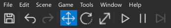
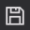
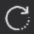
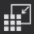
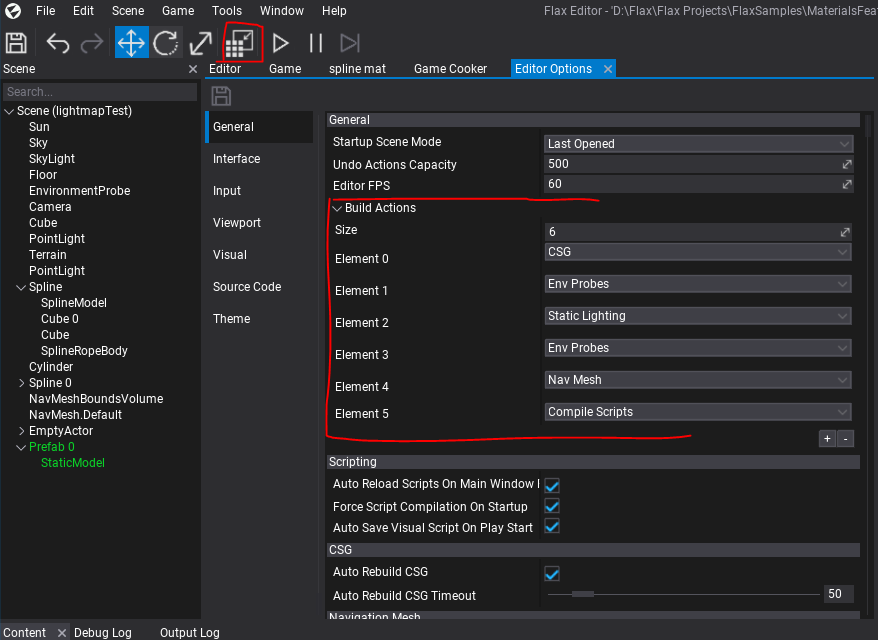

Toolbar

The Toolbar is a part of the main editor window and contains a set of useful buttons. You can use it to quickly save the project or pause the in-editor simulation.
| Button | Description |
|---|---|
|  | Saves all modified scenes and assets (Ctrl+S). |
 |
Reverts the last scene modification action (Ctrl+Z). |
 |
Replies the last scene modification action (Ctrl+Y). |
| Changes Gizmo tool mode to Translate (1). | |
|  | Changes Gizmo tool mode to Rotate (2) |
 |
Changes Gizmo tool mode to Scale (3) |
|  | Build scenes data - CSG, navmesh, static lighting, env probes (Ctrl+F10). |
| Starts/Stops the simulation (F5). | |
| Pauses the simulation. Game logic and physics simulation will freeze. | |
| Steps one frame in simulation (only in pause mode). |
Build button configuration

By default Build scenes data button will run:
- CSG build
- Env probes update (pre-GI)
- Static Lighting build
- Env probes update (post-GI)
- NavMesh build.
But it can be adjusted in Editor Options to match the desire workflow. For instance you can bind scripts compilation to that button or a custom series of actions to perform.